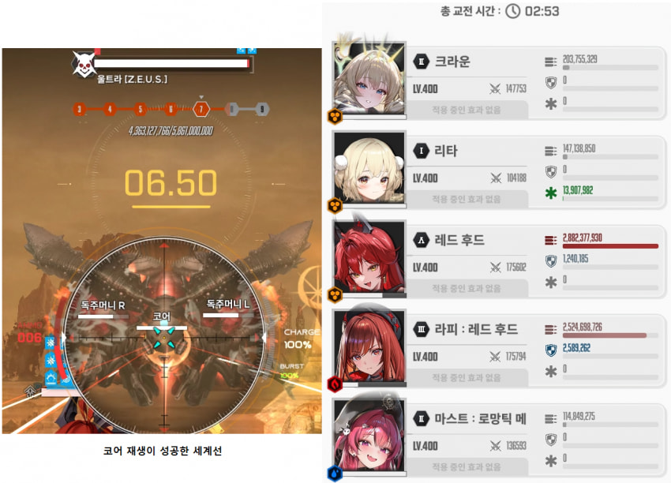
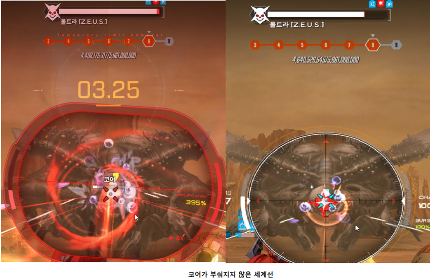
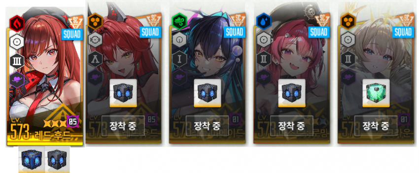
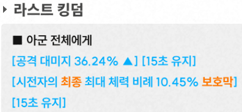
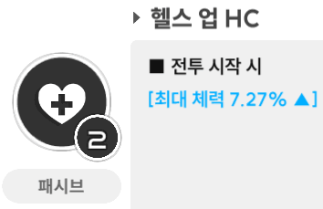
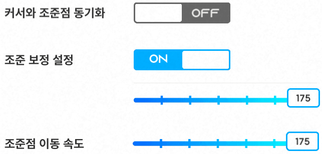
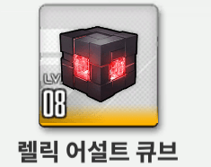
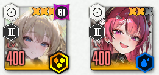

이번에 공략에 앞서
앞으로 울트라 9단 공략을 더이상 수정하지 않기 위해
조합 2개를 같이 올려서 작성하겠음
1. 리크레라메
2. 세크레라메
이 두개의 고점의 차이는...솔직히 잘 모르겠음
울트라는 너무 쌔도 패널티가 생김
??? : 쌘게 왜 패널티임?
보통 울트라 9단은 8단에 진입시 코어가 재생 되는걸 목표로 삼고 쳐야 하는데

만약 니붕이의 철갑 딜러가 너무 쌘 나머지 8단에 진입하고 코어가 부숴지지 않았다면
(이 현상을 편의상 오버딜 현상이라고 칭하겠음)

8단에서 9단으로 가는 마지막 구간중에 코어가 재생되지 않아 딜이 부족해질 수 있음
물론 이 코어가 재생되지 않아도 9단을 치는 니붕이들이 있긴 하겠다만
그럼 내 공략이 필요 없겠지

공략 시작하기 전에 일단 오버딜 현상이 일어나지 않는 니붕이들 기준으로 작성함
저 오버딜 현상은 약간의 조정만 해주면 바로 해결되는 이슈라서
일단 큐브 세팅부터 봅시다
세크레라메 리크레라메 공통적으로

레후 마스트 세이렌 - 재장전 고정
라피 - 탄충 or 재장전
크라운 풀코강 - 레벨 높은 큐브
크라운 풀돌 - 체력 고정
??? : 풀돌 크라운은 왜 체력 큐브 낌?
울트라는 8단에 진입 할 경우 독 브레스가 강력해지는데
평소에 잘 막아주던 크라운의 보호막이 못 버티고 중간에 엄폐를 해 풀버때 딜로스가 남
그러나 우리의 왕님의 보호막은

시전자의 최종 최대 체력 비례 보호막을 주기 때문에

우린 이 체뻥으로 단단해진 왕님의 쉴드로 8단때 딜로스를 1도 없이 풀딜을 박을거임
??? : 근데 왜 명함 크라운은 언급이 없음?
+)제보로 알려진 정보로는 1돌 오우너가 체력큡으로 못막는다고 함
풀돌만 시도 ㄱㄱ
여기서부턴 갠취 세팅

세팅 끝
택틱 참고용 영상
1. 리크레라메
https://www.youtube.com/watch?v=dmW_OeM_Vt0
택틱은 간단함
첫 속성 저지를 리타 버쿨감에 맞추기 위해 끝까지 존버 하다가 터트려 주면 됨
이거 말곤 진짜 별거 없음
2. 세크레라메
https://www.youtube.com/watch?v=asZN2eLUybU
진짜 별거 없음
그냥 모든 속성 저지 보이는 족족 쏴주면 됨
클리어 스펙
세크레라메 (큐브 포함)
세이렌 - 공증 11
레드후드 - 우코 92 공증 46
테무후드 - 우코 97 공증 20 장탄 226
리크레라메 (큐브 포함)
레드후드 - 우코 92 공증 46
테무후드 - 우코 116 공증 20
오버딜x 공략 끝
자 이제 오버딜 때문에 9단이 실패하는 니붕이들은 특효약을 쓸거임
진짜 단순하게 해결하는 방법은 레드후드 큐브 빼는거임
??? : 이거 너무 약해져서 각이 안나와요

그럼

렙 낮은 큐브로 바꿔서 끼셈
이렇게 해도 안된다면

크 크 메 타이밍에
메스트 버스트 그냥 쓰지말고 크라운 버스트 써주셈
이렇게 계속 세계선 찾으면서 오버딜 안나게 치면 됨
끝
궁금한거 있으면 댓글로 문의